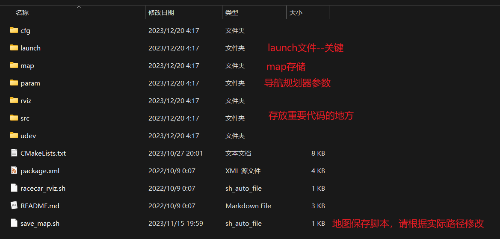

使用说明文件说明文件说明src文件夹的内容racecar文件夹的内容launch文件夹的内容racecar/src下的内容复现说明技术手册速度快但建图好的关键循迹相关参数的调节： 导航相关参数的调节最关键的代码是auto_nav.py解耦调试经验总结
使用说明
文件说明
文件说明
实验源码文件夹存放的是与技术报告有关的代码，为区域赛时所写，国赛时并未更新
代码文件夹存放了三份代码
这里的速度均指第一圈的速度，第二圈导航的速度为2075，时间大约为11s
x1850为低速版保底代码，第一圈（包含停车的3s）时间大约为30s
x1925为高速版本，第一圈时间为24s
planB为备用方案，当第二圈导航无法正常使用时，使用这个方案。这个方案两圈都是跑雷达循迹
src文件夹的内容

my_slam_gmapping重写的gmapping，只是当时测试的残留，在实际代码中并未使用到，不用关注，如果你要研究
链接：我手写了个SLAM算法！ - 知乎 (zhihu.com)
给gmapping加激光雷达运动畸变去除模块 - 知乎 (zhihu.com)
lidar_undistortion_2d**雷达去畸变模块，测试残留，在实际代码中并未使用到
链接：LiuLimingCode/lidar_undistortion_2d (github.com)
racecar文件夹的内容

launch文件夹与src文件夹里的内容最关键
launch文件夹的内容
racecar/src下的内容
复现说明
1.最基础的准备工作：按照官方配置好小车
2.导航用的算法是TEB算法，具体内容情况技术手册
请根据手册配置好teb模块
3.将任意一份代码复制到主目录下，编译
下图是ros的文件系统层级

4.编译完成后，source一下工作空间
5.修改下面的路径为自己的真实路径

6.打开1个终端，输入roslaunch racecar Run_car.launch启动小车的传感器
7.在src/racecar/src下打开一个终端，输入python3 stop.py，不要回车，这个是停车的脚本，当小车失控乱跑的时候才回车使用，这里只是做好准备
8.确保小车电调处于关闭状态，在src/racecar/src下再打开一个终端，输入python3 auto_nav.py回车，即可运行。等待所有东西加载完毕后，打开电调，小车就能跑了
技术手册
国赛版与区域赛版主要区别在雷达循迹算法的优化上，增强了其抗光性能，进而提升了鲁棒性
速度快但建图好的关键
提高ekf融合发布频率
param下的ekf_params.yaml，适当提高frequency

循迹相关参数的调节：

① rate1~rate3 是从近到远 3 对锥桶的误差计算权重，循迹在 1925 以下速度的基本不需要再改动了，速度快了才考虑适当加大 rate2和 rate3。
② max_left_dis 不改动，max_right_dis 代表雷达循迹能扫描到的 右边的锥桶的最大 x 方向距离，目前 max_right_dis 的值为 1.5， 除非现场确实出现很大的互相影响，否则不再减小 max_right_dis 了，如果发现他找不到靠右边的桶可以适当加大一些。
③ 最重要的就是 PID 的 kp 和 kd 参数，这是最可能要修改的两个参数了，当发现小车转不过弯适当增大 kp 值，因为参数做了归一化， 所以小小的 kp 就会有大大的影响，特别是小车能跑只是贴外圈而 已，增大 kp 值的时候可以每次增大 0.05 进行尝试，相反如果是 太贴内圈肯定降低 kp 会好，入弯反应慢或者直道摆动严重对采点 影响大，还是建议玄学调调，最后一次调试的时候发现增大 kd 好 像对减小抖动帮助不大，反而降低 kd 之后直道稳一些。
④ 有一个参数，就是 middle_angle，目前 1925/1850 版本使用的是 84（每辆车的舵机中值可能有差别），正常情况下这是不该改的，但如果为了让小车在速度快的时候 提前拐大弯，因为两个大弯都是左转，所以适当增大 middle_angle 是可以的，虽然不合理，但我们试过了确实有奇效。
导航相关参数的调节
在amcl_nav_teb.launch中

最关键的代码是auto_nav.py
细读代码与手册
解耦调试
如果只要调试雷达循迹，只需要将topic改为car/cmd_vel，即注释第四行，解注释第5行
修改后：
开启小车传感器
1roslaunch racecar Run_car.launch开启雷达循迹
xxxxxxxxxx11roslaunch racecar lidar_tracking.launch记得准备好stop.py随时停车
如果要耦合调试，记得修改回来
经验总结
多调试！
最后，祝取得好成绩！